مسارٌ واحد متّصل من أربعة حروفٍ إلى قراءة قصار السور وقصصٍ من أربع عشرة صفحة.
هذه الصفحة تجرده محطةً محطة: ماذا يتعلّم الطفل في كل واحدة، وكيف يعمل
تمرينها، وما دورُك أنت. وكلُّ رقمٍ فيها محسوبٌ من بيانات المنهج لا مكتوبٍ بيد.
في خمس دقائق
الصورةُ الكبرى: المراحلُ الخمس، ثم أرقامُ الرحلة، ثم عهودُنا الثابتة.
درباً واحداً بمحطاته ونجومها، وزرَّ «تابع من هنا»
يضعه في أول محطةٍ لم يُتمّها — فلا يبحث ولا يختار.
كيف يعمل القفل
المحطة تُفتَح بإتمام ما قبلها (نجمةٌ واحدة تكفي)،
إلا البوّابتين فتُفتحان بالإصابة لا بالإتمام.
دورُك أنت
لا شيء في العادة. وإن أردتَ فتحَ محطةٍ أو إعادةَ قسمٍ
فذلك في لوحة وليّ الأمر خلف بوابتها.
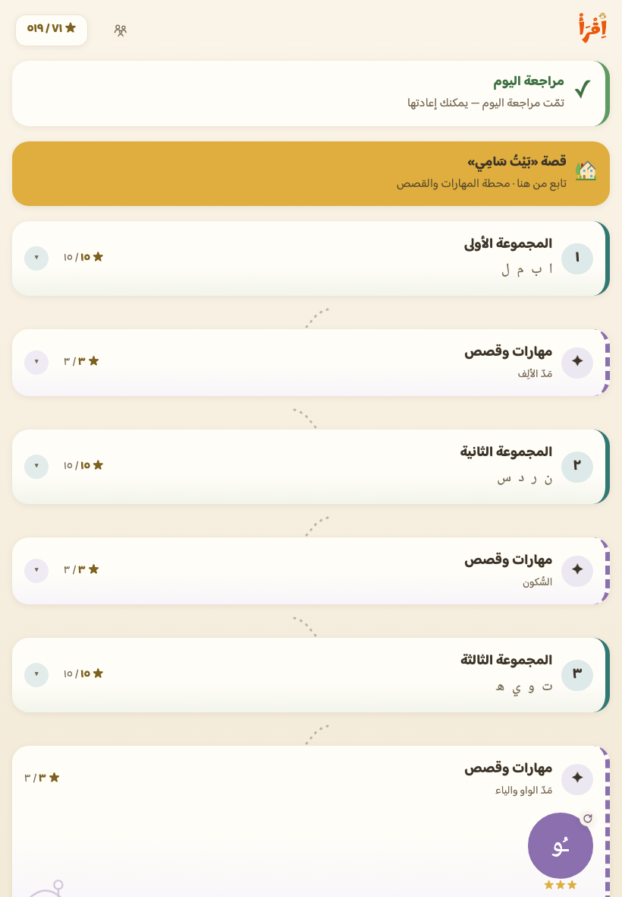
خريطةُ الرحلة كما يراها الطفل — لقطةٌ من التطبيق نفسِه.
أرقام الرحلة — محسوبةً لا مكتوبة
كلُّ رقمٍ أدناه يستخرجه فاحصٌ آليّ من بيانات المنهج ويقابله بما في الصفحة، فإن
نمت الرحلةُ ولم تنمُ الصفحةُ معها احمرَّ الفحص قبل أن يشيخ الرقم كذباً.
٢٩١محطة في الرحلة
٨٧٣نجمة تُكتسب
٢٨حرفاً بأشكاله
٥٣٦كلمةً مصوَّرة
٦٦٢جملةً متدرّجة
٢٣قصةً مفكوكة
١٢سورةً بتلاوة قارئ
١٣شجرةَ جذرٍ صرفيّ
لماذا نبدأ بأربعة حروفٍ لا بالألف والباء
الترتيب هنا بالتواتر لا بالأبجدية: الألف واللام وحدهما نحوُ رُبع أيّ نصٍّ
عربيّ، فبأربعة حروفٍ يقرأ الطفل كلمةً حقيقيةً في يومه الأول — وهو أقوى محفّز.
والحروفُ المتشابهة صوتاً أو شكلاً مباعَدةٌ بين المجموعات قصداً.
المجموعات السبع: ٧ مجموعات،
و٢٨ حرفاً، و٣٦ كلمة
المجموعة
حروفها
كلماتها
لماذا هنا
الأولى
ا ب م ل
بَابَا · مَامَا · بَابْ · مَالْ
الأعلى تواتراً، وسهلةُ النطق، ومتمايزةٌ شكلاً — فتُقرأ كلمةٌ في اليوم الأول
أولُ حرفٍ حلقيّ (ع) معزولاً عن أشباهه (هـ ح)، والكاف قبل القاف بفاصل
الخامسة
ح ج خ
حُوتْ · جَمَلْ · جَبَلْ · حَلِيبْ · خَرُوفْ
العائلة الشكلية الواحدة تُدرَّس معاً بعد رسوخ القراءة (التمييز بالنقاط)
السادسة
ش ص ز ط
شَمْسْ · مَطَرْ · زَيْتْ · صَارُوخْ · قِطَارْ
المتشابهات الصوتية جاءت بعد أصولها (س · ت) بمجموعتين فأكثر
السابعة
ث ذ ض ظ غ
ثَعْلَبْ · ذَهَبْ · ضِفْدَعْ · غُرَابْ · ظَرْفْ
الأندرُ تواتراً والأصعبُ نطقاً في الخاتمة
نوع محطة · درسُ حرف
درس الحرف
٢٨محطة
ماذا يتعلّم الطفل
اسمَ الحرف وصوتَه بالحركات الثلاث،
وأشكاله الأربعة (منفرداً وأولاً ووسطاً وآخراً) ملوَّنةً داخل كلمات يعرفها.
كيف يعمل التمرين
أربعُ خطواتٍ في نحو ثلاث دقائق: اسمعْ وشاهد ←
تتبَّعْ بإصبعك على نموذجٍ باهت ← ميِّزْ بأذنك بين ثلاثة أصواتٍ مدروسة ←
ركِّبْ كلمةً بمقاطعها. والخطأ يُسمعه ما اختاره ليقارنه بما أراد.
دورُك أنت
اجلسْ معه في أول درسين لتعرف الإيقاع. وبعدها انظر في
لوحتك: الحرفُ الذي يتكرّر خطؤه يحتاج صوتَك أنت لا إعادةَ الدرس.
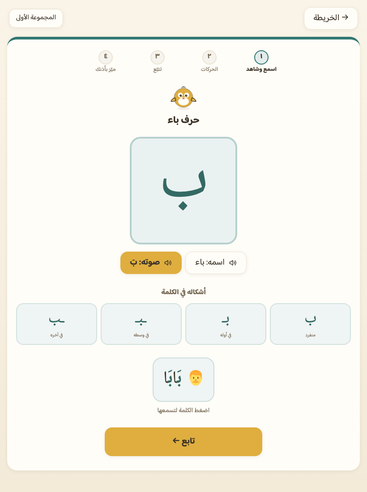
درسُ الحرف كما يُعرض على الطفل.
نوع محطة · لعبة
ركّب واقرأ — خاتمةُ كل مجموعة
٧محطات
ماذا يتعلّم الطفل
أن الكلمة مقاطعُ تُركَّب لا صورةٌ تُحفَظ —
وهو جوهرُ التهجّي على طريقة النورانية.
كيف يعمل التمرين
صورةٌ وكلمةٌ مبعثرةُ المقاطع (بَا · بْ)،
يرتّبها فيسمعها كاملةً. ومشتّتاتُه من مقاطعَ درسها هو لا من غيرها.
دورُك أنت
اطلبْ منه أن يقرأ الكلمة بصوتٍ عالٍ قبل أن يضغط
زرّ السماع — فالسماعُ مكافأةٌ بعد القراءة لا بديلٌ عنها.
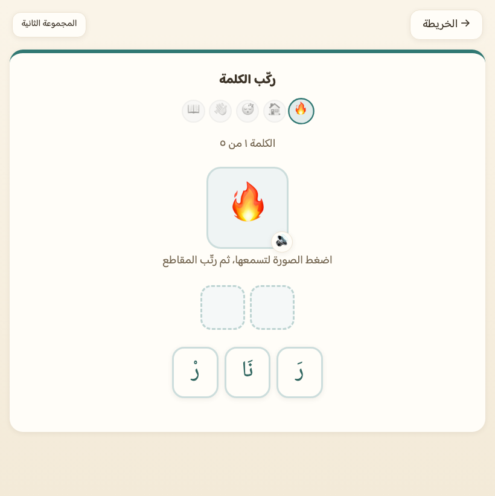
لعبةُ الكلمات في آخر كل مجموعة.
لكل علامةٍ درسُها في أول موضعٍ تكون فيه مادّتُها مفكوكة
الطفل يقرأ «بَابَا» و«بَابْ» من يومه الأول، فيُسمّى له ما في يده حين تكتمل
أمثلتُه المفكوكة لا بعد ذلك بمجموعات. فمدُّ الألف بعد المجموعة الأولى، والسكونُ
بعد الثانية، ومدُّ الواو والياء بعد الثالثة — ستةُ دروسٍ في ستة مواضع.
دروسُ العلامات الستة (٦ دروس) —
ونصُّ القاعدة هو نفسُه المعروض في التطبيق حرفاً بحرف
الشدّة حرفان: ساكن ثم متحرّك، يُنطقان حرفاً واحداً قويّاً.
مفكوكة · مشدَّدة
التَّنوين
بعد المجموعة ٥
التنوين نون ساكنة في آخر الكلمة، تُنطق ولا تُكتب.
بحركة · بتنوين
اللام الشمسية والقمرية
بعد المجموعة ٦
اللام القمرية تُنطق ساكنة، واللام الشمسية لا تُنطق ويُشدَّد ما بعدها.
قمرية · شمسية
نوع محطة · درسُ علامة
درس العلامة
٦دروس
ماذا يتعلّم الطفل
اسمَ العلامة وأثرَها في النطق — وهي أصعبُ
أجزاء فكّ الشيفرة لأنها تُنطق ولا تُقرأ حرفاً.
كيف يعمل التمرين
قاعدةٌ قصيرة، ثم قارِنْ بين طرفَي الزوج
(بَ/بَا) مسموعَين، ثم تمرينان يدخلان القياس: قراءةٌ صامتة («أيُّهما ممدود؟»
والخياران مكتوبان بلا صوت) وتمييزٌ بالأذن («أيَّ واحدةٍ سمعت؟»).
دورُك أنت
في لوحتك قسمٌ اسمُه «العلامات» بصندوقين لكل درس:
القراءةُ الصامتة والسماع. ولونُه لأدناهما — فمن أتقن السماع وحده لم يتقن
العلامة.
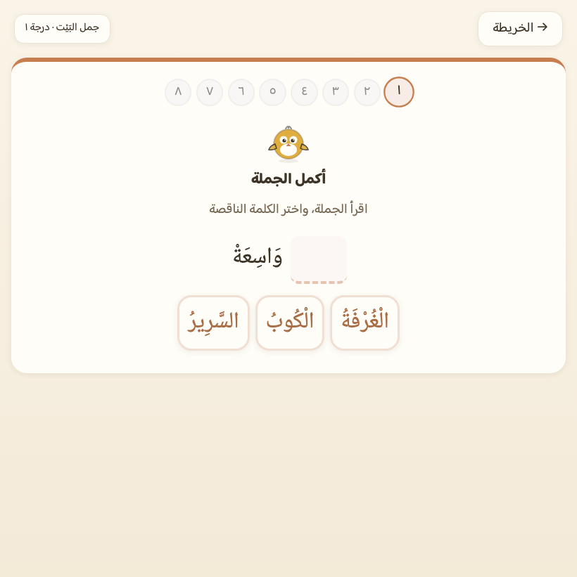
شاشةُ تمرينٍ كما تُعرض — والعلامةُ تُقاس بمثلها.
أولُ ما يقرؤه بنفسه: ثلاث قصصٍ بين المجموعات
بعد المجموعة الرابعة يقرأ الطفل قصةً كاملةً بحصيلته وحدها. وموضعُ كل قصةٍ
بعد العلامة التي توظّفها: الشدّةُ ثم «بَيْتُ سَامِي»، والتنوينُ ثم
«جَمَلُ حَسَنْ»، واللامُ ثم «الشَّمْسُ وَالْمَطَرْ».
بَيْتُ سَامِي كَبِيرْ
عيّنةُ سطرٍ من أول قصة — بخطّ التطبيق نفسِه ومقاسه، فما تراه هنا هو ما
ستراه الطفلة على الشاشة.
نوع محطة · قصةُ تأسيس
قصةٌ مفكوكة بين المجموعات
٣قصص
ماذا يتعلّم الطفل
أن ما تعلّمه يُقرأ: جملٌ متّصلة لا
كلماتٍ مفردة، وكلُّ حرفٍ فيها له درسُه سلفاً.
كيف يعمل التمرين
يقرأ سطراً سطراً، ولكل سطرٍ زرُّ سماعٍ بعد
القراءة، وسؤالُ فهمٍ مصوَّرٌ في آخرها. وله أن يسجّل صوته وهو يقرؤها.
دورُك أنت
اسمعْه يقرأ بصوتٍ عالٍ مرّةً واحدة. ولا تصحّح كلَّ
زلّة — القصةُ قراءةٌ لا امتحان، ولذلك لا يُقاس فيها شيء.
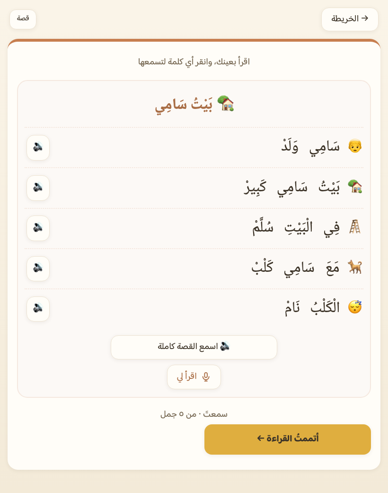
قصةُ «بَيْتُ سَامِي» — أولُ ما يقرؤه بنفسه.
باعدنا بين المتشابهات — ثم واجهناه بها قصداً
الفصلُ بين الشبيهين نصفُ العلاج، وبعده مواجهةٌ مقصودة: محطتان لا فرق في
تمرينهما إلا الزوجُ نفسُه. ولكلِّ محطةٍ موضعُها الذي تكتمل عنده حروفُ أزواجها —
فالضادُ في المجموعة السابعة، ولا يجوز زوجُها قبلها.
محطتا المواجهة: ٢ محطتان،
و٧ أزواج
المحطة
موضعها
أزواجها
ما يُقاس
ميّز بين المتشابهات
بعد المجموعة ٦
س/ص · ت/ط · ك/ق
تمييزٌ سمعيّ يدخل صندوقَ المراجعة المتباعدة
ميّز بين الأصعب
بعد المجموعة ٧
ذ/ظ/ز · د/ض · ث/س · هـ/ح
مثلُه — ويعود ما التبس عليه في مراجعة الغد
نوع محطة · مواجهة
ميّز بين
٢محطتان
ماذا يتعلّم الطفل
أن يفرّق بين الحرفين اللذين تتشابه أصواتُهما
في أذنه — لا أن يعرف كلَّ واحدٍ وحده.
كيف يعمل التمرين
خطوةُ «قارِن» يسمع فيها الفرقَ مقصوداً، ثم
جولتان لكل زوج: الخياران هما الزوجُ نفسُه بحركةٍ متطابقة فلا يُميَّز إلا
بالصوت. وعند الخطأ يُسمَع الصوتان متتابعين — استثناءٌ معلَن من قاعدة
«لا تلقين للصواب».
دورُك أنت
إن تكرّر زوجٌ بعينه في لوحتك، انطقْه له أنت وجهاً لوجه:
فرقُ ت/ط يُرى في الفم قبل أن يُسمع في السمّاعة.
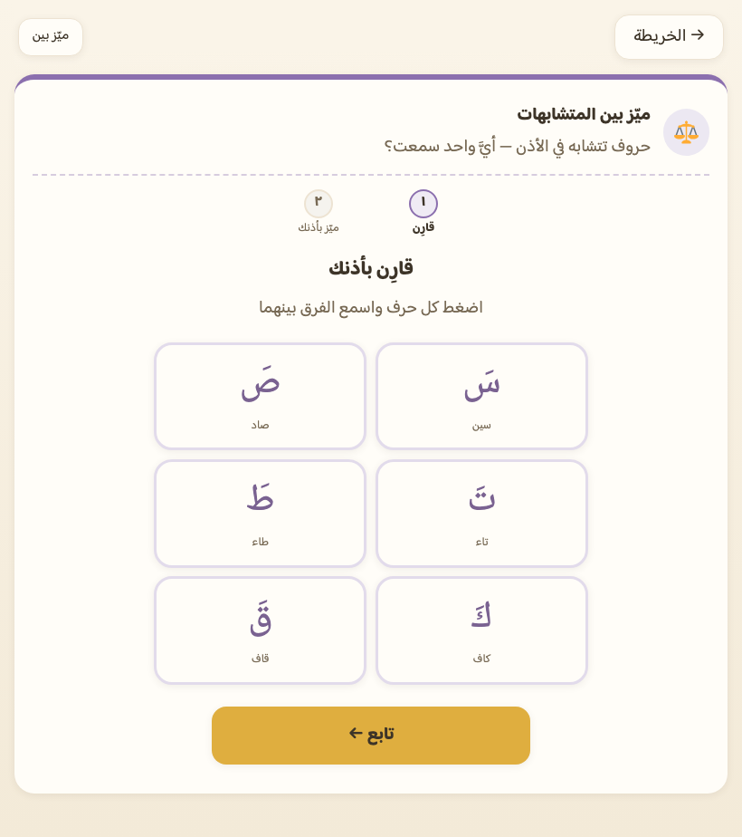
محطةُ المواجهة — الخياران هما الزوج نفسُه.
بوابتان تُعبَران بالإصابة لا بالإتمام — ولا رسوب فيهما
القفلُ في الرحلة كلِّها بالإتمام، إلا قبل المفصلين الكبيرين — المرحلة القرآنية
والبساتين — فقبل كلٍّ منهما بوّابةُ مراجعةٍ إجبارية تُبنى من أضعف مهاراته هو.
نوع محطة · بوّابة
بوابة المصحف · بوابة الحديقة
٢بوّابتان
ماذا يتعلّم الطفل
لا شيءَ جديد — البوّابة تقيس ولا تدرّس.
وغايتُها ألّا يدخل المصحفَ ولا الحديقةَ وفي حروفه ثغرة.
كيف يعمل التمرين
عشرةُ تمارين من أضعف ما في صناديق مراجعته
(لا من المستحقّ اليوم)، والعبور بإصابة ≥ ٨٠٪ من المحاولات.
دورُك أنت
ولا رسوبَ فيها: دونها تبقى التالية مقفلة مع إعادةٍ
فورية بلا حدٍّ ولا عقاب، وتُبنى تمارينها من جديدٍ في كل محاولة. فإن تعثّر مراراً
فلا تدفعه — راجعْ معه أصواتَ حروفه المتعثّرة بصوتك أنت.
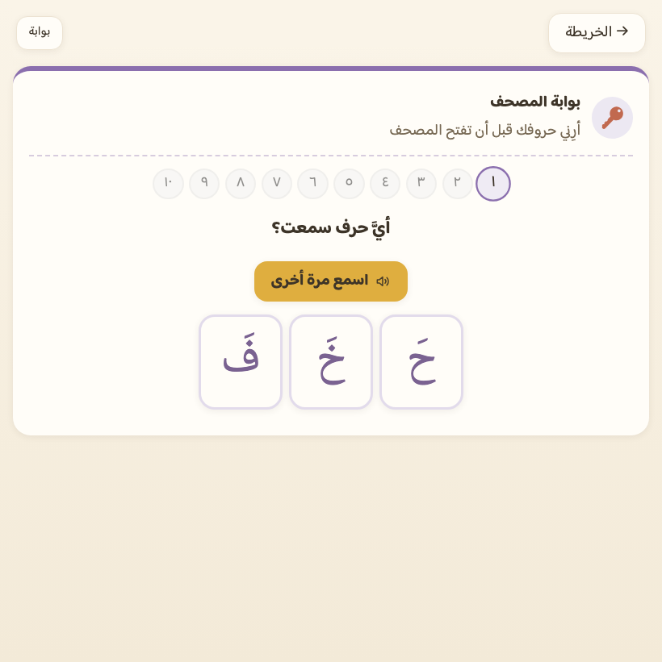
البوّابةُ تقيس ولا تدرّس.
المرحلة القرآنية — ولا سورةَ قبل كلماتها
هنا لا يزيد صعوبةُ الفكّ: الحروفُ كلُّها مدروسة، وإنما تُضاف علاماتُ الرسم
العثماني. والمرحلة مشقوقةٌ ٥ محطاتٍ
مسمّاة بعدّاداتها فلا تكون كتلةً واحدة يضيع فيها الطفل.
٢٤كلمةً إملائية من القرآن
٣درجاتٍ حدُّها عددُ الحروف
٥صورٍ للهمزة بكراسيّها
٩علاماتِ رسمٍ عثمانيّ
٤أمثلةً للحروف المقطَّعة
١٢سورةً بكلماتها وتلاوتها
٦٨آيةً بصوت القارئ
٢٣١كلمةَ مصحفٍ تُقرأ مفردة
محطاتُ المرحلة ومحتواها — والأسماءُ محسوبةٌ من بيانات
السور: سورةٌ تُضاف غداً تفتح محطتها بلا سطرٍ يُعدَّل
المحطة
ما فيها
سورُها
التهيئة
الهمزةُ بكراسيّها الخمسة والتاءُ المربوطة، ثم
٢٤ كلمةً قرآنية على ثلاث درجاتٍ حدُّ كلٍّ عددُ
حروفها (٣ ← ٤ ← ٥ فأكثر)
—
رسمُ المصحف
تسعُ علاماتٍ للرسم العثماني (ألفُ الوصل · الألفُ
الخنجرية · المدّة · الياءُ بلا نقطتين · الواوُ الصغيرة · الياءُ الصغيرة ·
الميمُ الصغيرة فوقَ الحرف وتحتَه · الدائرةُ الصغيرة)، ثم الحروفُ المقطَّعة
تُقرأ بأسمائها لا بأصواتها
—
سورٌ قصار ١
لكل سورةٍ محطتان: كلماتُها ثم آياتُها
الفَاتِحَة · الإخْلَاص · الفَلَق · النَّاس
سورٌ قصار ٢
مثلُها، والترتيب بالطول التصاعديّ
الكَوْثَر · العَصْر · قُرَيْش · المَسَد
سورٌ قصار ٣
ومعها قصةُ «الْفِيلُ وَالْكَعْبَةْ» في موضعها قبل سورتها
الفِيل · الشَّرْح · المَاعُون · القَارِعَة
نوع محطة · قرآنية
كلماتُ السورة ثم آياتُها
٣٠محطة
ماذا يتعلّم الطفل
يقرأ كلماتِ السورة مفردةً أولاً، ثم يقرأ
السورةَ بالرسم العثمانيّ وخطّ المصحف. والسورةُ مقفلةٌ حتى يُتمّ كلماتِها.
كيف يعمل التمرين
كلماتُ السورة مشقوقةٌ من نصّ آياتها آلياً
لا مكتوبةً بيد؛ يقرؤها بطاقاتٍ ثم يجدها داخل الآية. ثم شاشةُ السورة: قراءةٌ
بعينه، وتلاوةٌ بصوت الشيخ محمود خليل الحصريّ آيةً آية، ثم خطوةُ ترديدٍ بلا
مؤقّتٍ ألبتّة — ومعها «رتّل وسجّل» اختياريّاً.
دورُك أنت
لا تمتحنه هنا. المصحفُ يُتلى ولا يُختبَر —
ولذلك لا تُقاس شاشةُ السورة ولا الترديدُ آلياً، وإعفاؤهما مكتوبٌ بسببه في
فحوصنا.
نوع محطة · قصةُ سورة
«الْفِيلُ وَالْكَعْبَةْ»
١قصة
ماذا يتعلّم الطفل
خبرَ السورة بلغته قبل أن يقرأه في كلام الله —
كما لا تُقرأ سورةٌ قبل كلماتها.
كيف يعمل التمرين
قصةٌ مؤلَّفة بقيود المفكوكية نفسِها، تقع
قبل محطة كلمات سورتها، ولها سؤالُ فهمٍ مصوَّر.
دورُك أنت
هذه قصةٌ دينيةُ المحتوى مرّت ببوّابة اعتمادٍ ثلاثية
عندنا. اقرأها قبله إن شئت، وأجبْ عن سؤاله إن سأل.
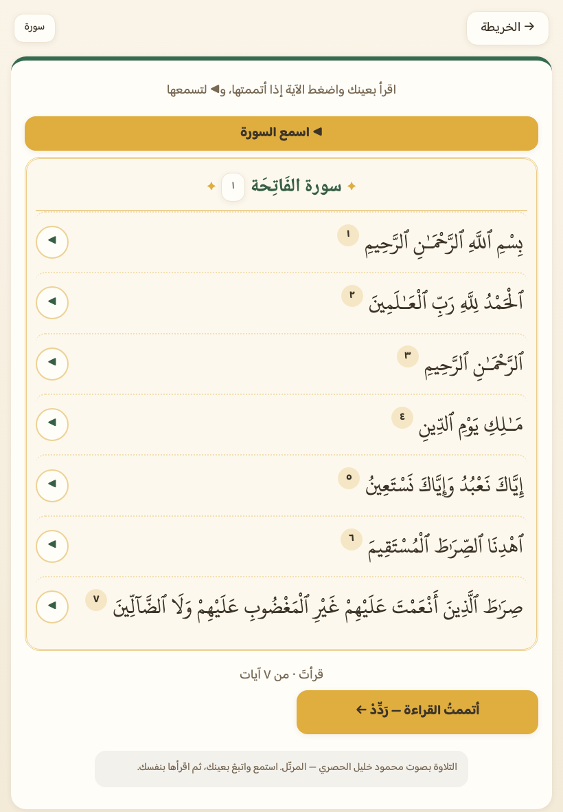
شاشةُ السورة — ولا نكتب نصّ المصحف في صفحةِ عرض: ما تراه لقطةٌ
من التطبيق، ونصُّه فيه منقولٌ حرفاً بحرف من مصدرٍ مرجعيّ.
حديقةُ الكلمات — عشرةُ بساتين توسّع الثروة اللفظية
بعد التتويج يأتي التوسّع: ٥٠٠ كلمة في عشرة
بساتين من عالم الطفل، كلُّ بستانٍ ١٠ باقاتٍ
من خمس كلمات. والجديدُ هنا رصيدٌ لا شيفرة — حروفُه كلُّها مدروسة.
البساتين العشرة — ولكلٍّ باقاتُه ثم سلّمُ جمله ثم قصتُه
البستان
باقاته
كلماته
درجاتُ سلّمه
قصتُه
البَيْت
١٠
٥٠
٨
مِفْتَاحُ سَامِي
الأُسْرَة
١٠
٥٠
٨
جَدَّةُ حَسَنْ
الجِسْم
١٠
٥٠
٨
ضِرْسُ زَيْدْ
الطَّعَام
١٠
٥٠
٧
شُورْبَةُ أُمِّي
الحَيَوَانَات
١٠
٥٠
٨
أَرْنَبُ الْحَدِيقَةْ
الطَّبِيعَة
١٠
٥٠
٧
زَهْرَةُ الْحَقْلْ
المَدْرَسَة
١٠
٥٠
٨
دَفْتَرُ زَيْدْ
المَلَابِس
١٠
٥٠
٨
قُفَّازُ حَسَنْ
المَدِينَة
١٠
٥٠
٨
حَافِلَةُ الْمَدْرَسَةْ
اللَّعِب وَالأَلْوَان
١٠
٥٠
١٠
كُرَةُ زَيْدْ
نوع محطة · باقةُ بستان
باقةُ خمس كلمات
١٠٠باقة
ماذا يتعلّم الطفل
خمسَ كلماتٍ جديدة بصورها وأصواتها في موضوعٍ
واحد — فيتعلّق المعنى بالمعنى لا بالحرف وحده.
كيف يعمل التمرين
بطاقاتٌ تُقرأ وتُسمَع، ثم «اقرأ واختر»: يقرأ
الكلمة مكتوبةً ويختار صورتها. ولا صورةَ تُعرَض لكلمةٍ لا تصوّرها صورةٌ صادقة —
تبقى بطاقةً تُنقَر ولا تُجعل جواباً.
دورُك أنت
استعملْ كلمةَ اليوم في كلامك معه. الكلمةُ التي تسمعها
الأذنُ في البيت تثبت أسرعَ من التي تُرى في شاشة.
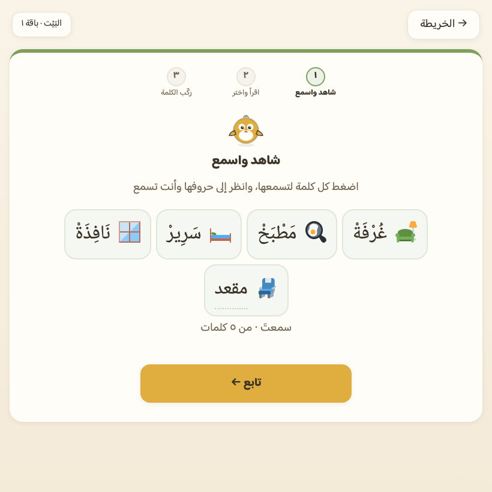
باقةُ خمس كلماتٍ من بستان «البَيْت».
سلالمُ الجمل — من كلمتين إلى خمس
لكل بستانٍ سلّمُ جملٍ يتدرّج بعد باقاته:
٨٠ درجة و٦٦٢
جملة، لا تُعرض جملةٌ إلا وكلماتُها كلُّها مدروسة.
ولا حرفَ مشكولٌ فيها مكتوبٌ بيد: الجملةُ كلماتُ أساسٍ معلَنة وأدوارٌ إعرابية،
والصيغةُ تُشتقّ ويرفض الفاحصُ ما خالف.
يرى كلماتِ بستانه وقد صارت حكايةً لها بداية
ونهاية — فيصير الرصيدُ معنىً لا قائمة.
كيف يعمل التمرين
ثلاثُ صفحاتٍ إلى ثمانٍ بحسب مستواها، ولكلِّ
قصةٍ غلافٌ يُختار منه، وسؤالُ فهمٍ مصوَّر في آخرها.
دورُك أنت
اسألْه: «ماذا حدث في النهاية؟» — سؤالُك أنفعُ من كل
سؤالٍ في شاشة.
نوع محطة · شجرةُ جذر
اجمع العائلة
١٣شجرة
ماذا يتعلّم الطفل
أن الكلمات عائلات: مَن أبصر «كتب» في
«مَكْتَبَة» قرأ الجديدَ من أسرتها بلا تهجٍّ. والوعيُ الصرفيّ من أقوى منبئات
الفهم القرائي في العربية خاصةً.
كيف يعمل التمرين
شجرةٌ تُعرَض بأعضائها المدروسين وحدهم
(لا قفلٌ مرئيّ ولا إغراءٌ بما لم يبلغه)، ثم «اجمع العائلة» — وأذكى مشتّتٍ فيها
«الحروفُ بلا المعنى»: «رُكْبَة» في حوض الرُّكوب.
دورُك أنت
موضعُ كل شجرةٍ محسوبٌ لا مكتوب: تُفتح حيث يكتمل ثالثُ
عضوٍ في مساره هو. فإن رأيتَه يعود إليها فسيجد غصناً زاد.
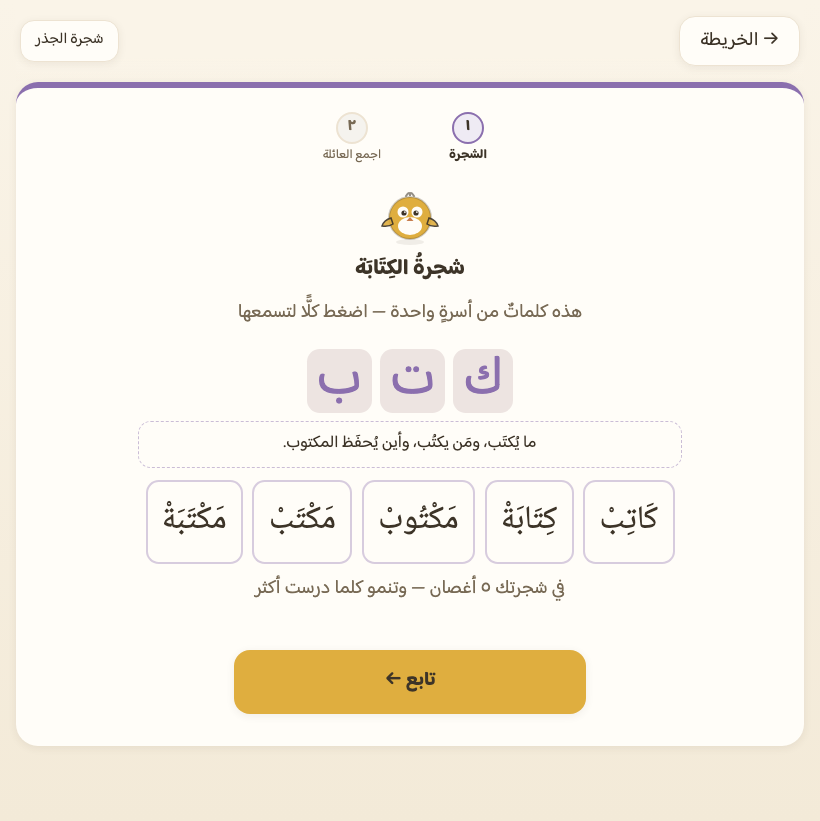
شجرةُ الجذر بأعضائها المدروسين وحدهم.
رفُّ المكتبة — الطلاقةُ تُبنى بأميال قراءةٍ لا بتمارين
في ذيل الرحلة، حيث رصيدُ الطفل أوسعُ ما يكون، يُفتَح رفٌّ من
٩ قصصٍ طويلة:
١٠٨ صفحة و٥١٣
كلمةً تُقرأ — وبها صارت المكتبةُ كلُّها ٣٫٨ أضعافِ ما كانت.
سلّمُ الطول ٤–٥–٦، ورافداه: تأليفٌ مقيَّد، وتراثٌ عامّ
يُعاد تأليفُه بالعقد نفسِه — لا حرفَ يُنقل من نصٍّ منشور
حجمَ القراءة نفسَه: أن يمضي في نصٍّ طويل
حتى نهايته. وهو ما تُبنى به الطلاقة، ولا تُبنى بالتمارين.
كيف يعمل التمرين
القصةُ مقاطعُ، والمقطعُ وحدةُ العرض ووحدةُ
السؤال (سؤالٌ لكل مقطع ممّا قرأه إلى صفحته لا ممّا بعدها).
ولا صوتَ لجملةٍ فيها — القصةُ تُقرأ لا تُسمع، وتبقى نقرةُ الكلمة شبكةَ
الأمان الوحيدة. وتُختَم بخطوة «اِقْرَأْ لِأُمِّكْ».
دورُك أنت
اجلسْ لخطوة «اِقْرَأْ لِأُمِّكْ» — هي الغاية من الرفّ كلِّه،
وتسجيلُها يبقى في الجهاز ولا يغادره.
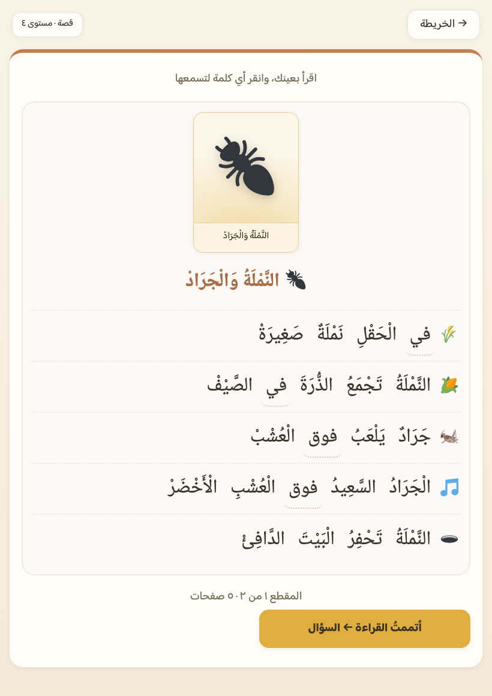
قصةُ رفٍّ بغلافها ومقطعها الأول.
كيف يُقاس ما تعلّمه — ولماذا يعود إليه
لا تدريسَ بلا قياس: كلُّ محطةٍ تدرّس مهارةً لها قياسٌ في صناديق المراجعة، وتمرينٌ
يعيدها، وموضعٌ تقرؤه أنت في لوحتك — أو إعفاءٌ مكتوبٌ بسببه (القصةُ والمصحفُ
يُقرآن ولا يُمتحَنان).
التكرار المتباعد (ليتنر)
كلُّ خطأ يُسجَّل على مستوى (الحرف × الحركة × نوع التمرين)، فيعود ما أخطأ فيه
سريعاً ويتباعد ما أتقنه: ١ ← ٢ ← ٤ ← ٨ ← ١٦ يوماً. ومراجعةُ اليوم ستةُ
تمارينَ لا أكثر — جلسةٌ تُنجَز في دقائق.
قياسُ العلامات كقياس الحروف
العلامةُ لا حرفَ لها، فتُقاس بمفتاحٍ لا حرفَ فيه — مفتاحٌ لكل درسٍ لا لكل
علامة (المدُّ درسان متباعدان، ودمجُهما يُجيز سؤالاً عن مدٍّ لم يُدرَس بعد).
ولها قسمُها في لوحتك.
خفوتُ التشكيل — جسرٌ إلى النصّ العاري
الكتبُ والصحفُ بلا شكل، فلكلِّ كلمةٍ عتبةُ خفوتها الخاصة بتاريخ طفلك معها:
ثلاثُ قراءاتٍ صحيحة متباعدة ⇒ يخفت الشكلُ جزئياً، وضِعفُها ⇒ يعرى. ونقرةٌ تكشف
الشكل ثوانيَ — ويُسجَّل الكشفُ تراجعاً فتعود مشكولةً حتى ينضج لعريها.
لوحةُ وليّ الأمر
خلف بوابةٍ لا يفتحها طفل: أين يتعثّر بالضبط (حرفاً بحركةٍ بنوع تمرين)، وأقسامُ
العلامات والجذور، ودقائقُ كل يومٍ من الأسبوع، ومؤشّرُ الطلاقة، ونسخةٌ احتياطية
من تقدّمه تُصدَّر وتُستعاد.
خارج الدرب
مراجعةُ اليوم
ماذا يتعلّم الطفل
لا جديد — تُعاد عليه أضعفُ ما عنده بأنواع
التمارين نفسِها التي تعثّر فيها.
كيف يعمل التمرين
ستةُ تمارينَ مخلوطةِ الأصناف (حرفٌ وعلامةٌ
وعائلةٌ ومواجهة) فلا تبتلع الحروفُ الجلسةَ ويبقى ما سواها بلا مراجعة.
دورُك أنت
اجعلْها عادةَ اليوم قبل الدرس الجديد. خمسُ دقائق
متباعدةٍ تفعل ما لا تفعله ساعةٌ متّصلة.
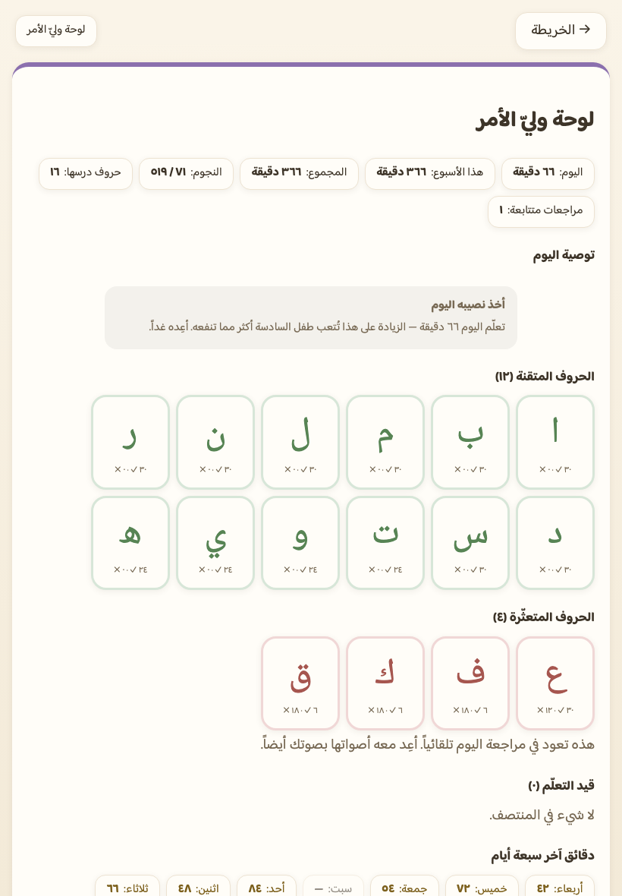
لوحةُ وليّ الأمر — خلف بوابةٍ لا يفتحها طفل.
عهودٌ ثابتة — تسري على كل محطةٍ أعلاه
هذه ليست وعوداً تسويقية: كلُّ واحدٍ منها يفرضه فاحصٌ آليّ يمرّ على المحتوى
قبل أن يصل إلى الطفل، ويحمرُّ إن خولف.
مفكوكيةٌ ١٠٠٪ مفروضةٌ آلياً
لا كلمةَ ولا جملةَ ولا قصةَ فيها حرفٌ أو علامةٌ لم تُدرَّس بعد — حتى الجملُ
المولَّدة والكلماتُ المشقوقة من نصّ السورة تمرّ بالفاحص، ويُرفض ما خالف.
صوتٌ مخزون، وقارئٌ للمصحف حصراً
٢٩٧٦ ملفَّ صوتٍ مُنتَجٌ مسبقاً ومحقَّقٌ بأذنٍ
بشرية ومعه دفترُ نسبٍ يقول من أين جاء — لا نطقَ آليّاً لحظياً. ومنها
٦٨ آيةً بتلاوة الشيخ محمود خليل الحصريّ (المرتَّل):
ونصُّ المصحف لا يُنطق آلياً أبداً.
تسجيلاتُ طفلك لا تغادر جهازه
في «اقرأ لي» و«اِقْرَأْ لِأُمِّكْ» يُلتقط صوتُه ويُخزَن محلّياً في الجهاز
ويُسمَع منه ويُحذف منه — بلا رفعٍ ولا شبكةٍ ولا تحليلٍ خارجيّ. والوحداتُ
الحاملةُ له لا تعرف الشبكة أصلاً.
يعمل دون إنترنت
يُثبَّت على الشاشة الرئيسة كتطبيقٍ مستقلّ، ويخزّن الأصواتَ والقصصَ والتلاوةَ من
أول فتحة — فيعمل بعدها في السيارة والطائرة وصفٍّ بلا شبكة ثابتة.
أيقوناتٌ لا إيموجي — و«صدقُ الصورة»
صورُ الكلمات ٥٧٣ أيقونةً مخزونة في التطبيق
لا محارفَ من خطّ الجهاز — فما راجعناه بأعيننا هو ما يراه طفلك على أيّ جهاز.
ولا صورتان متطابقتان لكلمتين في حوض سؤالٍ واحد.
لا مؤقّت ولا شاشةَ «خطأ»
لا عدَّ تنازليّاً في أيّ تمرين، ولا صوتَ رسوبٍ ولا وجهاً حزيناً. الخطأ
يُسمعه ما اختاره ليقارنه بما أراد، ثم يمضي.
ابدأ من الحرف الأول
لا تنزيل ولا حساب — تفتح الصفحة فيبدأ الطفل من «ا».